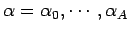
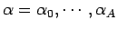

Sea el valor calculado por la red, y el valor deseado. Sean
y
sus  -cortes. Supóngase además que se tiene una representación discreta de los números difusos, para valores de
. Podemos definir las funciones de error
y
asi
-cortes. Supóngase además que se tiene una representación discreta de los números difusos, para valores de
. Podemos definir las funciones de error
y
asi
Otra alternativa consiste en calcular un valor representativo de los número y (ver seccion 3) y compararlos para definir el error . Sean y esos valores: